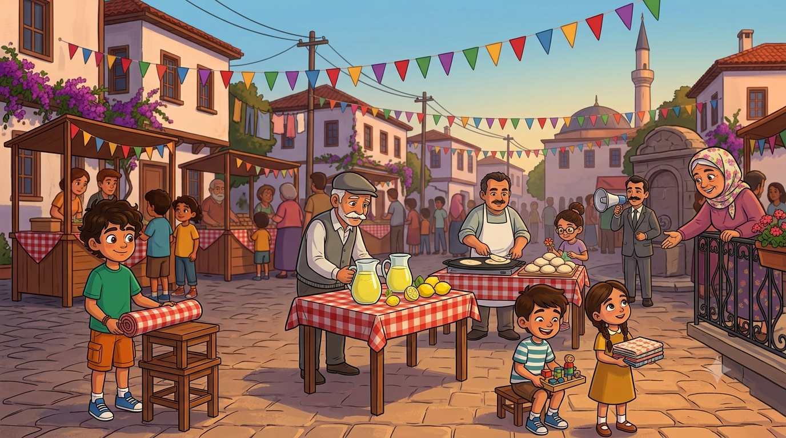
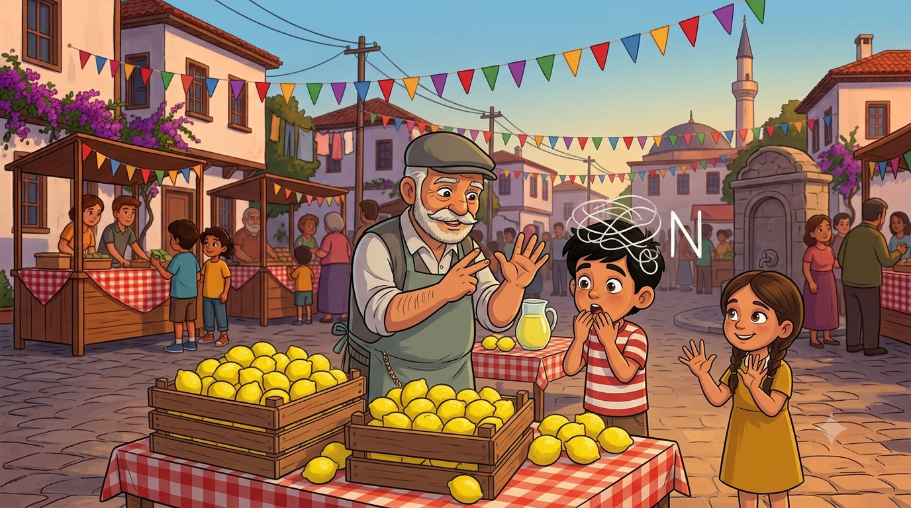
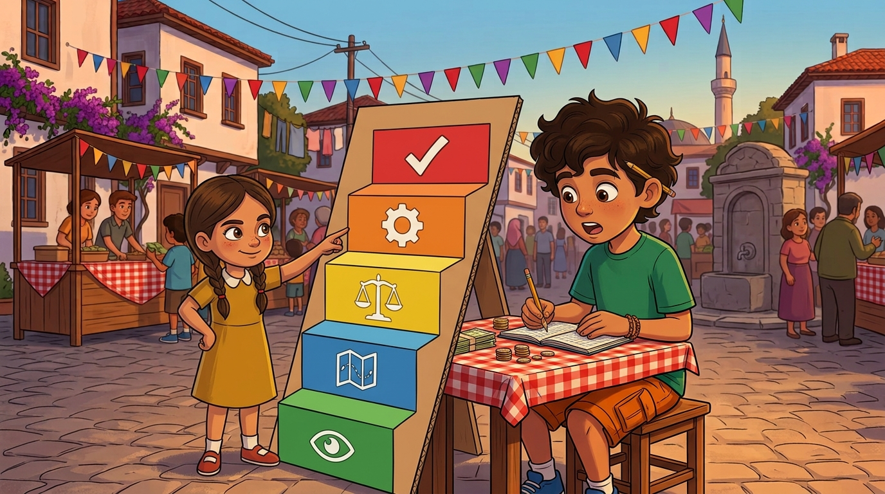
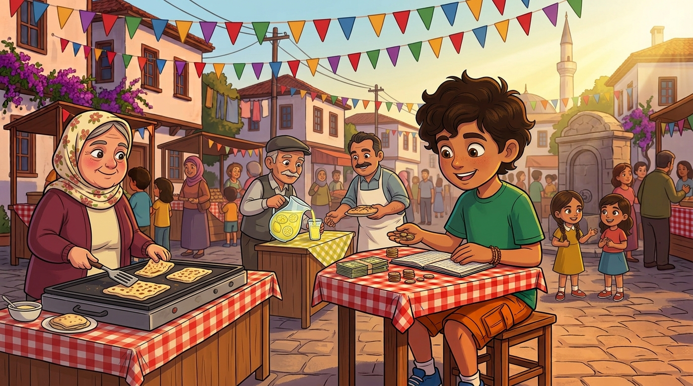

Okulun kütüphanesine yeni kitaplar lazım ve mahalle kolları sıvadı: KERMES! Gözlemeler, limonatalar, el emeği tezgahlar... Ama kasada oturan kişi hesap bilmezse kermes batar. Zihinden işlem, tahmin ve problem çözme adımlarıyla kasayı kurtarmaya hazır mısın?
Okulumuzun kütüphanesindeki kitapları ben bile ezberledim artık; o kadar az ki. Müdür Bey durumu muhtara açmış, muhtar da hoparlörün başına geçip boğazını üç kere temizlemiş: "Sayın mahalleli! Okulumuzun kütüphanesine kitap almak için cumartesi günü meydanda KERMES düzenlenecektir! Herkes hünerini getirecektir!"
Mahalle bir anda şantiyeye döndü. Mübeccel Teyze gözleme hamuru yoğurmaya başladı; balkondan aşağıya "İki yüz tane açarım ben, düşün siz gerisini!" diye bağırdı. Dedem limonata standı kuracağını ilan etti; nalburun önüne "Süfyan Usta'nın Meşhur Limonatası" diye tabela bile astırdı, üstelik tabelacıya parasını pazarlıkla ödedi. Elif kitap ayracı yapıyor, Emre'yle Ayşe eski oyuncaklarını satışa hazırlıyordu.
Peki ben? Muhtar elini omzuma koydu: "Altı görevden yüzünün akıyla çıktın. Yedincisi en büyüğü: Kendisini KERMES KASA GENEL SORUMLUSU ilan ediyorum!" Kasa demek para demek. Para demek hesap demek. Hesap demek... Deftere yazdım: "Görev 7: Kasa. Durum: Paniğin de hesabını tutuyorum artık."

İlk kriz daha kermesten önce çıktı. Dedem limonata için kaç limon alacağını hesaplıyordu. Emre hemen atıldı: "Bir bardağa yarım limon... bir kasada 30 limon... şey... dur... bir dakika..." Parmakları birbirine dolandı. Dedem gülümsedi: "Evlat, önce aşağı yukarısını bil, sonra kesinini hesaplarsın. Meydandan 300 kişi geçer, yarısı limonata içer: 150 bardak eder, aşağı yukarı. Bardağa yarım limon: 75 limon. Kasada 30 limon var: 3 kasa alırsam 90 limon eder, artar bile."
Emre'nin ağzı açık kaldı: "Bunu nasıl bu kadar hızlı yaptın dede?" Dedem kasketini kaldırdı: "Sayıları yuvarladım. 147'yi 150 yaparsan hesap su gibi akar. Aşağı yukarı bilen, kesin hesapta şaşmaz." Sonra bana döndü: "Ama kasadaki para öyle değil. Kasada kuruş kuruş kesin hesap olacak. Tahmin pusulan olsun, kesin hesap yolun."
Elif de Emre'ye zihinden işlem hilelerini öğretti: "10 ile çarpmak istiyorsan sona sıfır koy: 44 × 10 = 440. 19 ekleyeceksen 20 ekle, 1 geri al. Kağıt kalem her zaman yanında olmaz ama kafan hep yanında." Emre akşama kadar herkese "sor bana bir işlem!" diye gezdi. Horoza bile sordu.
🧠 Defterime not aldım:Tahmin için sayıları en yakın onluğa/yüzlüğe yuvarla: 475 × 9 ≈ 500 × 9 = 4500. Zihinden işlem hileleri: ×10 → sona sıfır ekle; +19 → +20 sonra −1; −27 → −30 sonra +3.

Kermes sabahı Elif beni kasanın başında buldu; önümde kâğıtlar, kafamda duman. "Abi," dedi, "problemden korkma. Problemin adımları var, merdivenin basamağı gibi." Parmaklarını açtı saymaya başladı: "Bir: ANLA — ne veriliyor, ne isteniyor? İki: PLANLA — hangi işlem gerekli? Üç: TAHMİN ET — sonuç aşağı yukarı ne çıkmalı? Dört: ÇÖZ. Beş: KONTROL ET — sonuç mantıklı mı, tahminine uyuyor mu?"
Hemen denedik. Problem şuydu: Bir kitap 85 lira; kütüphaneye 40 kitap lazım. Kaç lira toplamalıyız? Anladım: kitap fiyatı ve sayısı verilmiş, toplam para isteniyor. Planladım: çarpma işlemi. Tahmin ettim: 85'i 90'a yuvarla, 90 × 40 = 3600, aşağı yukarı. Çözdüm: 85 × 40 = 3400. Kontrol ettim: 3400, tahminim 3600'e yakın; mantıklı!
"Gördün mü," dedi Elif, "basamak basamak çıkınca merdiven yorulmuyor." O gün anladım ki problemler beni korkutamazdı; ben onları basamaklara bölebilirdim. Poğaçadan çember çıkaran mahalleyiz biz, bize problem mi dayanır?
🪜 Defterime not aldım: Problem çözme merdiveni: ANLA → PLANLA → TAHMİN ET → ÇÖZ → KONTROL ET. Kontrol basamağını atlama; tahminine uymayan sonuç "dur bir bak" demektir!

Kermes başladı ve meydan panayıra döndü. Mübeccel Teyze'nin gözlemeleri kapış kapış: tanesi 40 lira. Dedemin limonatası 15 lira; "Naneli olsun mu evlat?" diye sorup herkese naneli veriyor, seçenek sunmuş gibi yapıyordu. Elif'in kitap ayraçları 25, oyuncaklar 30 lira. Ben kasadayım: bir elimde para, bir elimde defter, dilimin ucunda çarpım tablosu.
Gün boyu problem yağdı, ben çözdüm: Üç gözleme alan Cemal Usta'dan 3 × 40 = 120 lira. Emre'nin komşu mahalleden gelen kuzeni 200 lira verdi, 2 limonata + 1 oyuncak aldı: 30 + 30 = 60, üstü 140 lira. Kim hesapta zorlandıysa merdiveni çıktım: anla, planla, tahmin et, çöz, kontrol et. Bir kere bile şaşmadım. Yani bir kere şaştım ama kontrol basamağında yakaladım; o sayılmaz, Elif de sayılmaz dedi.
Akşam olunca muhtar megafonla duyurdu: "Sayın mahalleli! Kermesimiz sona ermiştir! Kasa raporu, Kasa Genel Sorumlumuz tarafından açıklanacaktır!" Bütün meydan bana döndü. Defterimi açtım. Şimdi son hesapların zamanı...
💰 Defterime not aldım: Gerçek yaşam problemi dediğin kermeste yaşar: fiyat × adet, para üstü, bütçe kontrolü... Merdiven hep aynı: anla → planla → tahmin et → çöz → kontrol et.

Kasa Raporu! 🎯
Bütün meydan bekliyor. Her soruda problem merdivenini kullan ve doğru sonucu seç! (Gözleme 40 TL · Limonata 15 TL · Ayraç 25 TL · Oyuncak 30 TL)
⭐ Puan: 0❓ Soru: 1/5
📚 Kütüphane Kurtuldu!
Rapor açıklandı, alkış koptu: kermes gelirleri 40 kitaba yetti, üstüne bir de dünya küresi alındı! Müdür Bey kütüphanenin kapısına bir yazı astırdı: "Bu kitaplar, hesabını bilen bir mahallenin hediyesidir."
Kâşif Defteri — bugün öğrendiklerimiz:
• Problem merdiveni: Anla → Planla → Tahmin Et → Çöz → Kontrol Et
• Tahmin = sayıları yuvarla, "aşağı yukarısını" bil
• Zihinden işlem: ×10 sona sıfır; +19 = +20 −1
• Kasada kesin hesap, pusulada tahmin
• Kontrol basamağı hatayı yakalar — asla atlama!